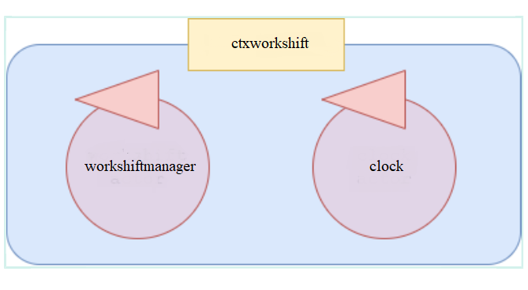

Introduction
Requirements
es0: Design and build a software system (named
workshift) that allows to manage a machine according to three turns:
- in the first turn (in the morning) the machine is able to handle messages (dispatches) of type m1:m1(V)
- in the second turn (in the afternoon) the machine is able to handle messages (dispatches) of type m2:m2(V)
- in the third turn (in the nigth) the machine 'sleeps'
Messages of types m1 and m2 can be sent by external entities at every time.
Requirement analysis
The consumer requires to desing and build a system using the QA-System that allows to manage two different type of messagges according on the time of the day.
According to the requirements, days are divided in three different period:
- morning: the system has to handle m1 messages and has to stores (if received) m2 messages in order to process them in the appropriate period;
- afternoon: the system has to handle m2 messages and has to stores (if received) m1 messages in order to process them in the appropriate period; ;
- night: the machine can't handle any message but it can stores them in order to process them in the appropriate period;
Other relevant aspects:
- The duration of the periods of the day is not specified by the customer
- Messagges can be sent by external entities: the QA-System provides the possibility to receive messages over the network using the QA-Infrastructure
We must design and build a system composed by two QActors:
- the workshiftmanager: the machine that handles the messages according to the requirements
- the clock that defines the various periods during the days
|

|